Seven tiers, from a regular expression to a human, measured on your own records. The answer is rarely “buy the bigger model”, and every figure can be verified by you.
git clone https://github.com/ArslaneSempai-ui/cascade-routing
node src/premiere-reponse.mjs
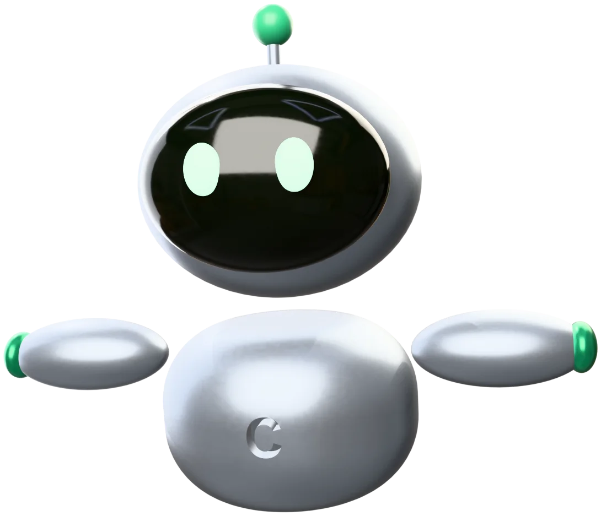
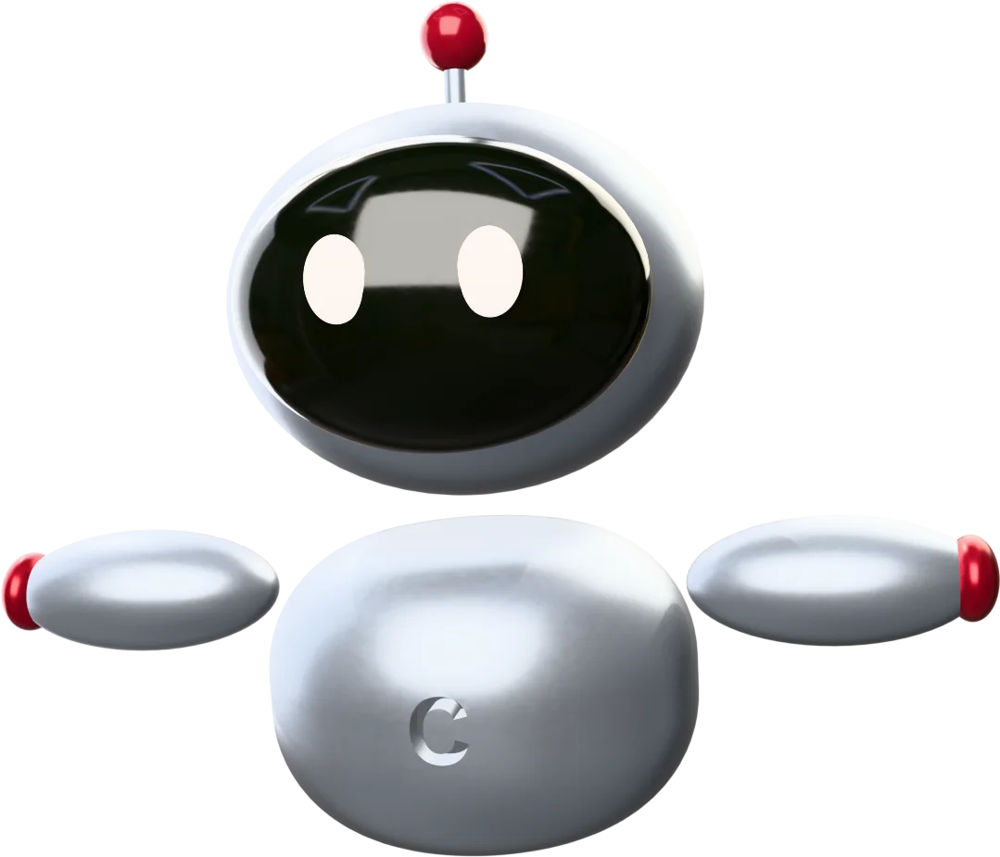
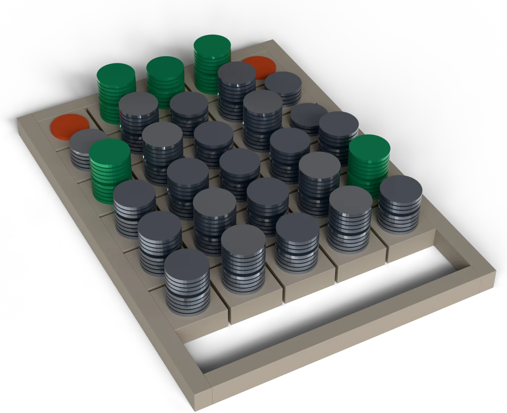
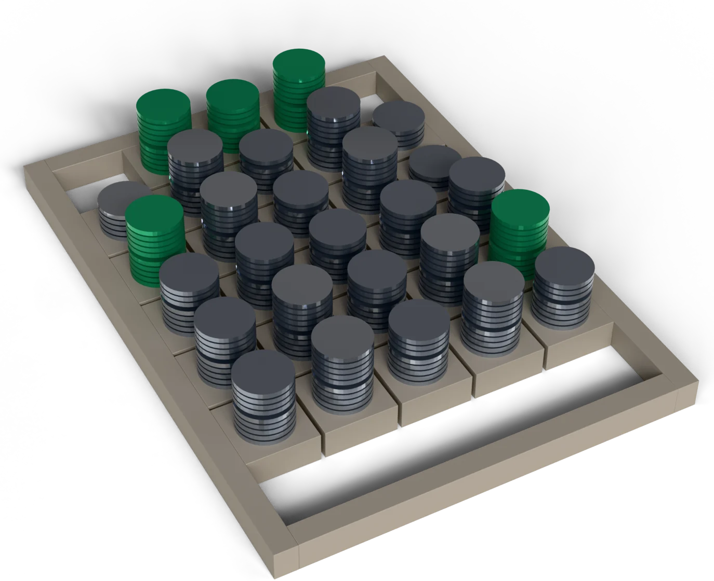
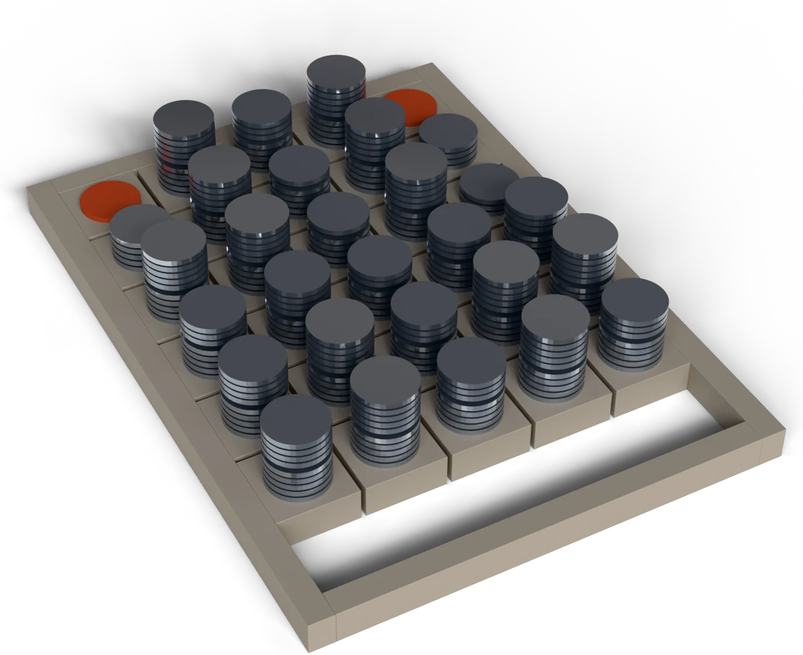
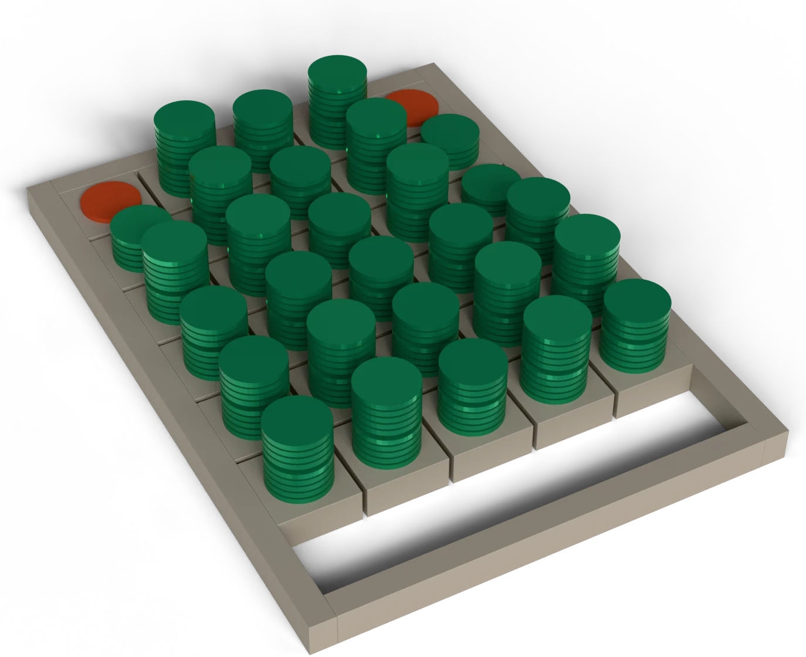
Both numbers are true. Only one leaves your desk.
Cost separates the two routings. Accuracy does not.
A blank gets read again. A wrong value gets filed.
Every count held across two passes. Every duration moved.
Every routing enumerated. One report you can argue with.
The five findings, explained
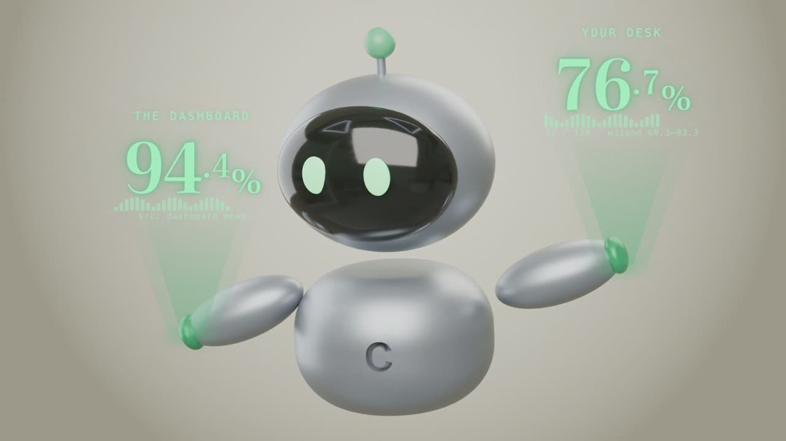
Measured on 1,000 held-out records for rules, small, large; 120 for the generative tiers. *The human tier is assumed at 85% until you measure it: npm run measure:humans grades your own reviewers. Green cells mark the published routing.
npm run measure:humans
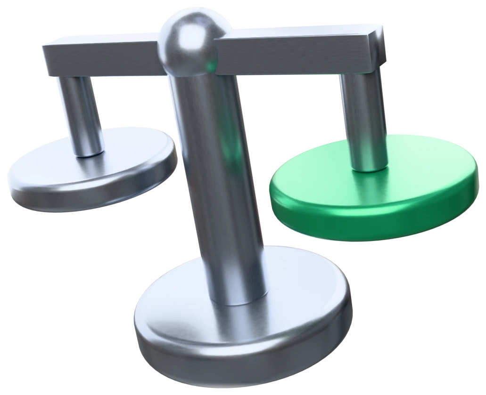
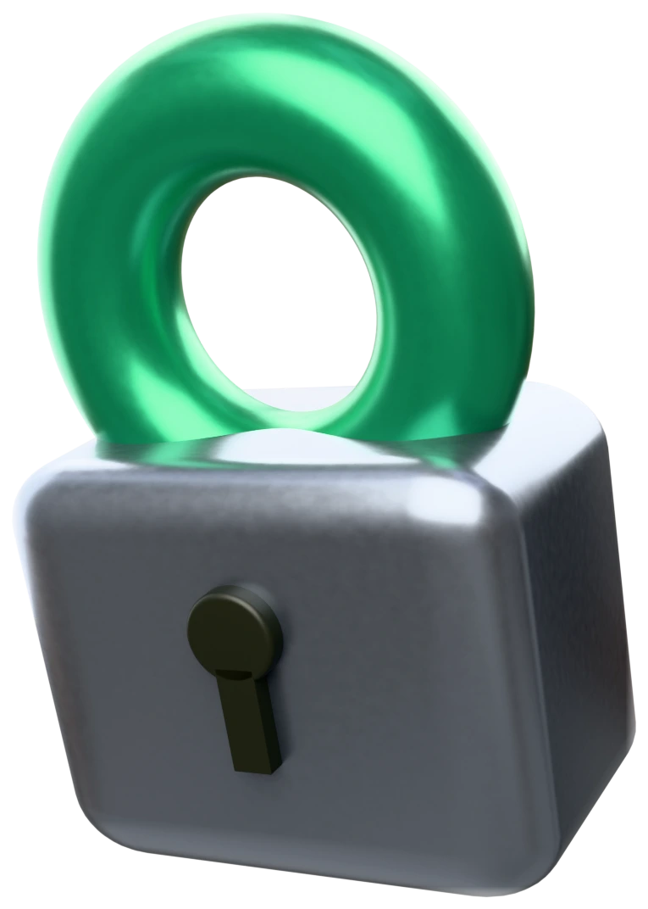
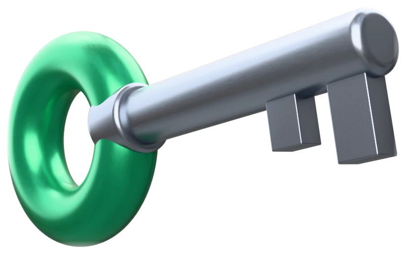
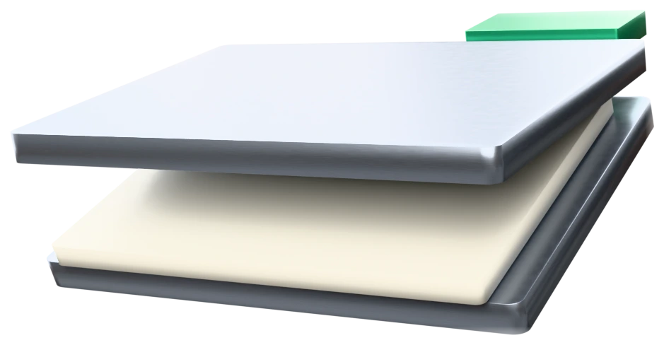
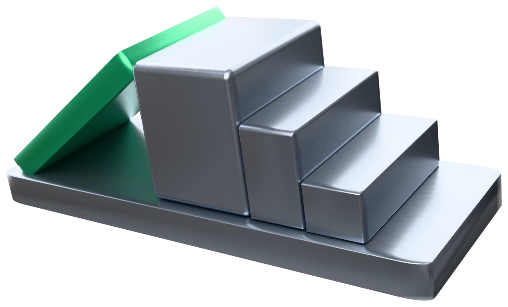